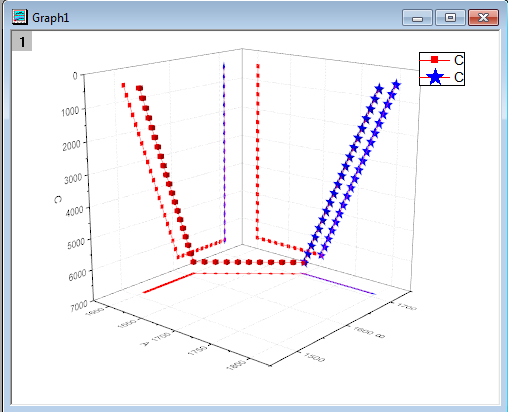
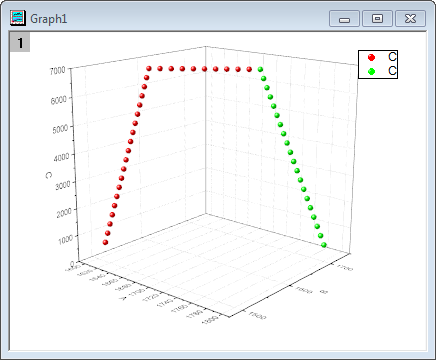
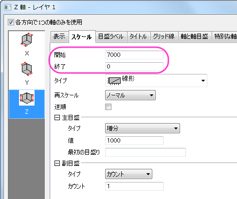
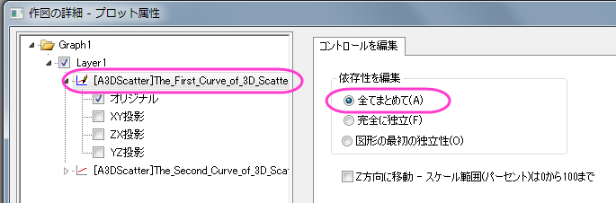
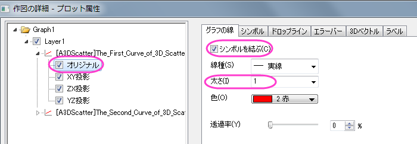
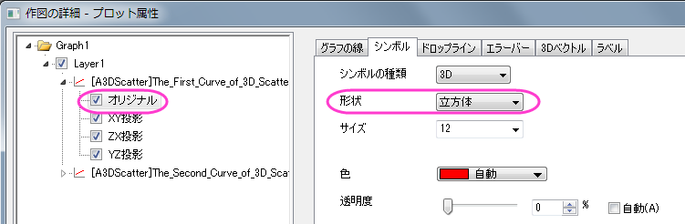
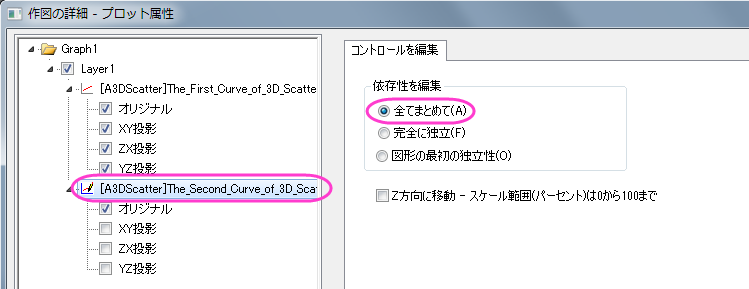
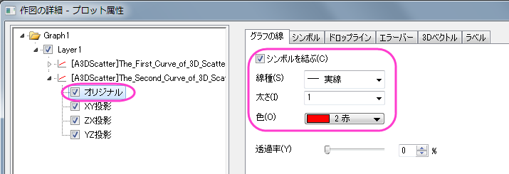
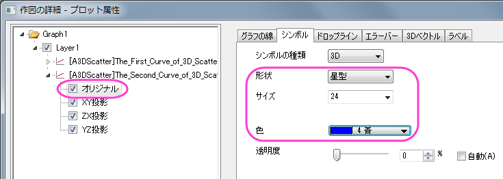

掘削ドリル位置の3D散布図と線の投影
3D-Scatter-LineProjection
サマリー
このチュートリアルは、3D散布図の作成方法とそのプロットの射影の表示方法を紹介します。
- 
必要なOriginのバージョン: Origin 2015 SR0以降
ステップ
このチュートリアルは、チュートリアルデータプロジェクト（<Origin EXE フォルダ>\Samples\TutorialData.opj）と関連しています。
- チュートリアルデータを開き、プロジェクトエクスプローラで3D Scatter with Line Projectionsのフォルダを開いて、ワークブック3DScatterPlotをアクティブにします。
- ワークシートThe_First_Curve_of_3D_Scatter をアクティブにします。列のＸＹ属性は、予めXYZに設定されているため、そのまま3Ｄ散布図を作図できます。列Ｃを選択し、メニューから作図:3D:3D散布図と操作してグラフを作図します。
- The Second Curve of 3D Scatter というワークシートをアクティブにします。C列を選択します。マウスを選択した列の右端に移動すると、マウスカーソルが
のような形になります。マウスボタンを押したまま、選択されたデータを新しく作成したグラフウィンドウまでドラッグします。操作の後、下図のようなグラフになります。
- 
- Ｚ軸をダブルクリックして軸ダイアログを開きます。スケールタブでＺアイコンが選択されているのを確認してから、開始と終了の値を交換することでＺ軸を反転させます。
- 
- OK をクリックして、ダイアログを閉じます。メニューからフォーマット：レイヤを選択し、作図の詳細ダイアログボックスを開きます。あるいは、プロットをダブルクリックしてもダイアログを開くことができます。もし、左パネルが開いていない場合、
 ボタンをクリックしてダイアログを拡張します。Layer1
ノードを広げます。最初のプロットを選択し、依存性を編集の項目で全てまとめてのオプションを選びます。この操作で、元のデータと他の投影、全てに同じ設定を適用します。
ボタンをクリックしてダイアログを拡張します。Layer1
ノードを広げます。最初のプロットを選択し、依存性を編集の項目で全てまとめてのオプションを選びます。この操作で、元のデータと他の投影、全てに同じ設定を適用します。
- 
- 最初のプロットのノードを選択して開き、オリジナルとXY/ZX/YZ投影の全てを選択します。
- 下図のようにオプションをセットします。色を設定するには、色のドロップダウンリストの指定色から目的の色を選択します。前の手順で全てまとめてが選択されているため、ここの設定は投影図にも反映されます。
- 
- シンボルタブで、形状を立方体に変更します。
- 
- 同様に、2番目のプロットを選択し、下図のようにオプションをセットします。
- 
- 
- 
- 最終的に、下図のようなグラフになります。